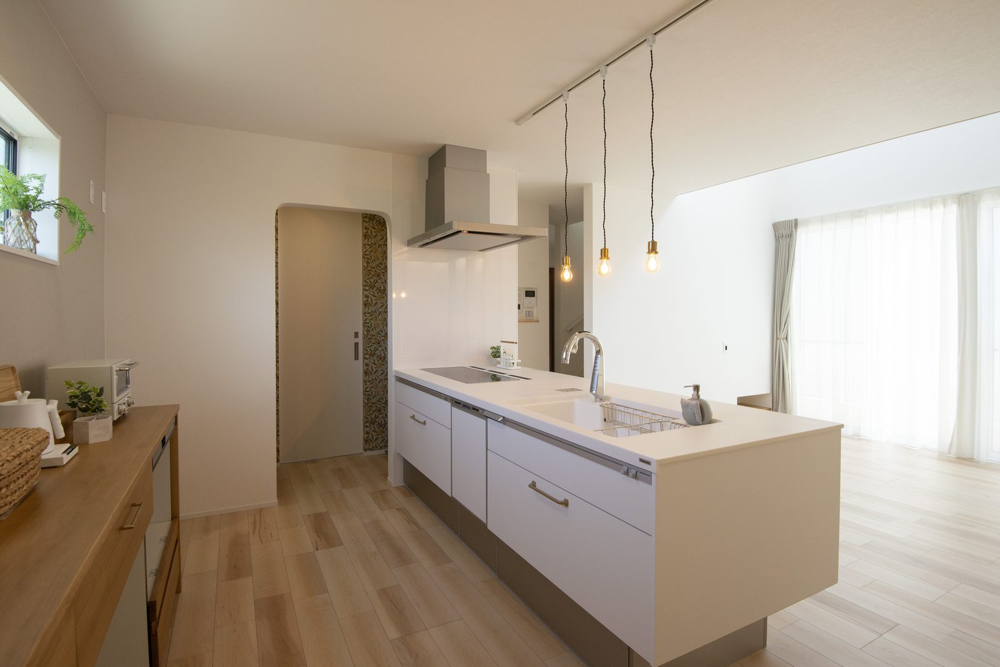
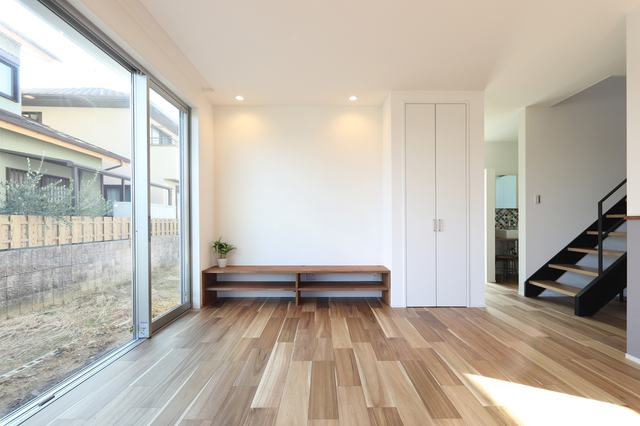
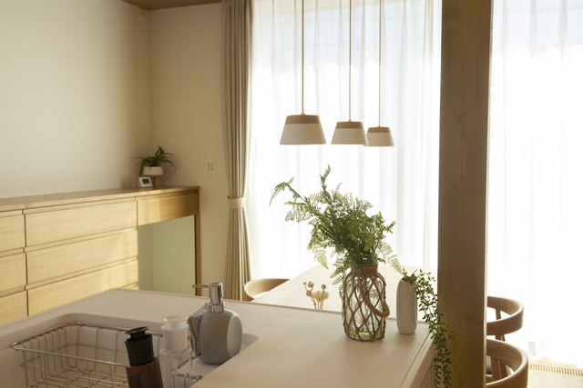
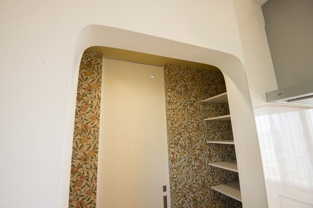
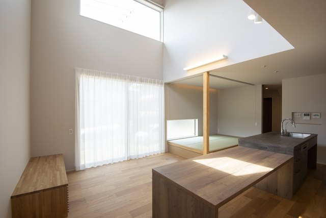
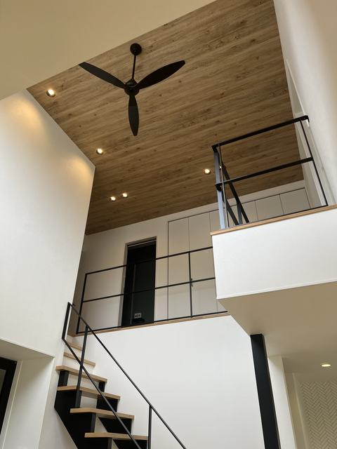
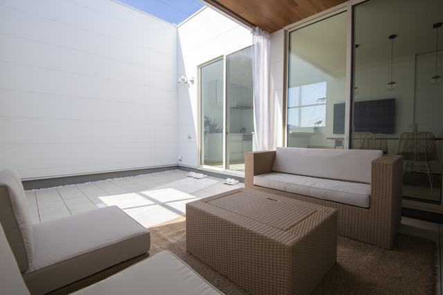

奈良で3代。大工歴43年の社長と専属の職人がつくる注文住宅。
土地もお金も決まっていない、という方がほとんどです。ご予算とやりたいことを聞いて、できること・できないことを正直にお伝えします。その場で契約を勧めることはしません。
「まだ早いかな」と思っている方にこそ、来ていただきたい会です。
約60分。持ち物はいりません。







見学もご相談も無料です。しつこい営業はいたしません。